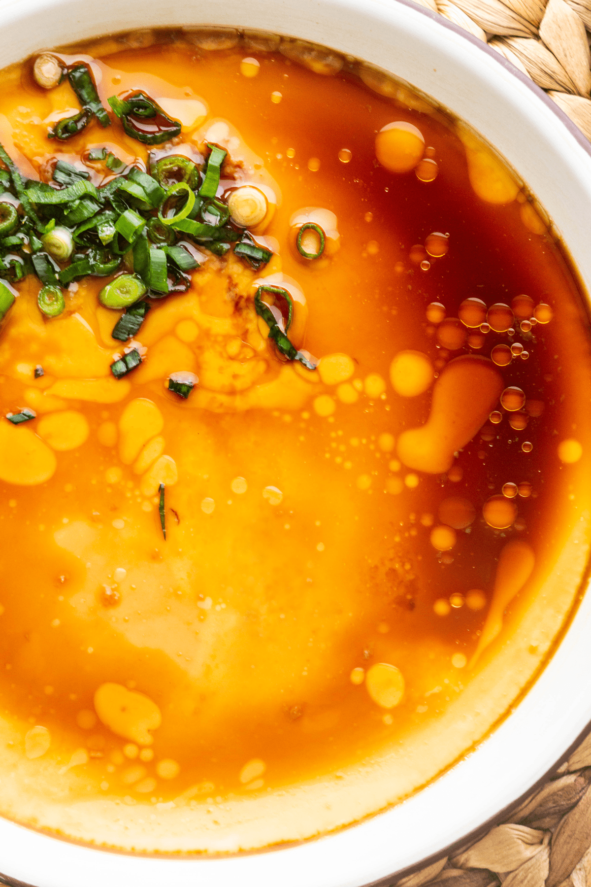

Steamed Egg

Description
Chinese steamed eggs or water egg is a traditional Chinese dish found all over China. Eggs are beaten to a consistency similar to that used for an omelette and then steamed.
Ingredients
- 4 egg
- 2 cup warm water
- 2 stalk scallions
- 0.50 tbsp salt
- 0.50 tbsp chicken bouillon
- 1 tbsp oil
- 1 dash white pepper (to taste)
Steps
- Cut scallions
- Boil water in the wok
- Start mixing eggs
- Prepare warm water and mix with eggs
- Start steaming eggs
- Boil, simmer, wait
- Add garnishes and seasonings
- Remove bowl from wok